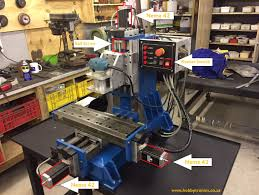
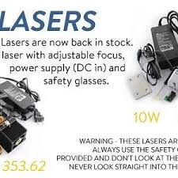
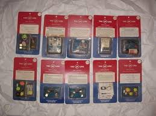

HOBBYTRONICS
Welcome to our store!
Welcome to HobbyTronics - South Africa's electronic components supplier for your electronics needs. Specialist supplier of electronic components such as sensors, robotics, breakout boards, Arduino, prototyping to the hobby and educational electronics market in South Africa and Africa. We supply the components you need.
Hobbytronics is an online retail store that sells the bits and pieces to make your electronics projects possible. Whether it’s a robot that can cook your breakfast or a GPS cat tracking device, our products and resources are designed to make the world of electronics more accessible to the average person. We ship nationwide (South Africa) and international to SADC member states. With the rapid advancement in Electronics and new technology such as accelerometers and gyros becoming much more price available, there is a growing number of people looking to build 'cool things'. From robots to rockets to simple circuits that light up an LED, these projects are much more accessible to the everyday hobby electronics enthusiast. But this new technology does come with limitations for this sector. For example, it simply isn't possible to solder some of the tinniest chips.
That is where Hobbytronics can help. We source products from around the world which provide short-cuts (such as the Triple Axis Accelerometer Breakout) that combines custom PCBs with chip and firmware, allowing you to concentrate on the main project, and we sell in small 'useful' quantities, just as you need. What do we sell? Our products range from things like resistors and LEDs to humidity sensors and LCD screens. Our goal is to make finding the parts and information you need easier and affordable so you can create awesome projects.
TRADING HOURS
- Monday:08:00-17:00
- Tuesday:08:00-17:00
- Wednesday:08:00-17:00
- Thursday:08:00-17:00
- Friday:08:00-16:00